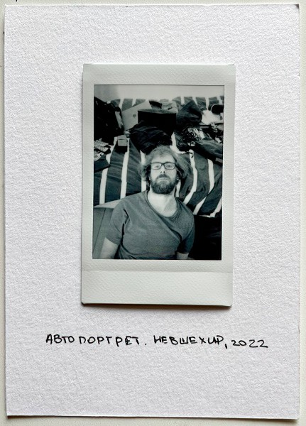
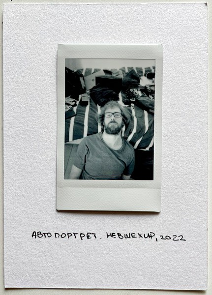
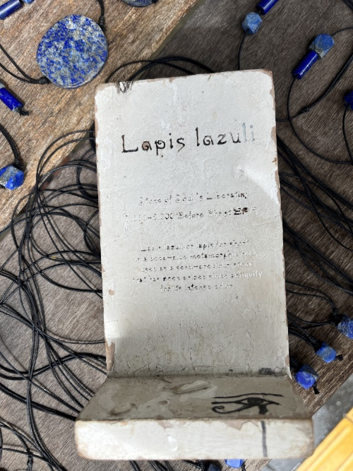

Автопортрет, 2022

Снимок сделан ляйкой, а потом напечатан на бумаге для Instax'а

Снимок сделан ляйкой, а потом напечатан на бумаге для Instax'а
Хорошее интервью Аркадия Островского в Русских норм.
Шикарные истории и снимки!
Несколько картинок из нашего виза-рана в Куала-Лумпур:


Хорошее интервью Натальи Зубаревич.
Не перестаю удивляться, как вообще можно воспринимать что-то, сказанное в такой злобной и агрессивной манере? Что за люди все это говорят, и что за люди, которые все это слушают?
Представление о справедливости в глазах людей исстари складывается из двух половин: добродетель торжествует, а порок наказан.
Посчастливилось нам дожить до такого времени, когда добродетель хоть и не торжествует, но и не всегда травится псами. Добродетель битая, хилая, теперь допущена войти в своём рубище, сидеть в уголке, только не пикать.
Однако никто не смеет обмолвиться о пороке. Да, над добродетелью измывались, но порока при этом — не было. Да, сколько-то миллионов спущено под откос — а виновных в этом не было. И если кто только икнёт: "а как же те, кто…", — ему со всех сторон укоризненно, на первых порах дружелюбиво: "ну что-о вы, товарищи! ну зачем же старые раны тревожить?!" (Даже по "Ивану Денисовичу" голубые пенсионеры именно в том и возражали: зачем же раны бередить у тех, кто в лагере сидел? Мол, их надо поберечь!) А потом и дубинкой: "Цыц, недобитые! Нареабилитировали вас!"
И вот в Западной Германии к 1966 году осуждено восемьдесят шесть тысяч преступных нацистов — и мы захлёбываемся, мы страниц газетных и радиочасов на это не жалеем, мы и после работы останемся на митинг и проголосуем: мало! И 86 тысяч — мало! и 20 лет судов — мало! продолжить!
А у нас осудили (по опубликованным данным) — около тридцати человек.
То, что за Одером, за Рейном — это нас печёт. А то, что в Подмосковьи и под Сочами за зелёными заборами, а то, что убийцы наших мужей и отцов ездят по нашим улицам и мы им дорогу уступаем — это нас не печёт, не трогает, это — "старое ворошить".
А между тем, если 86 тысяч западно-германских перевести на нас по пропорции, это было бы для нашей страны четверть миллиона!
Но и за четверть столетия мы никого их не нашли, мы никого их не вызвали в суд, мы боимся разбередить их раны. И как символ их всех живёт на улице Грановского 3 самодовольный, тупой, до сих пор ни в чём не убедившийся Молотов, весь пропитанный нашей кровью, и благородно переходит тротуар сесть в длинный широкий автомобиль.
Загадка, которую не нам, современникам, разгадать: для чего Германии дано наказать своих злодеев, а России — не дано? Что ж за гибельный будет путь у нас, если не дано нам очиститься от этой скверны, гниющей в нашем теле? Чему же сможет Россия научить мир?
В немецких судебных процессах то там, то сям, бывает дивное явление: подсудимый берётся за голову, отказывается от защиты и ни о чём не просит больше суд. Он говорит, что череда его преступлений, вызванная и проведенная перед ним вновь, наполняет его отвращением и он не хочет больше жить.
Вот высшее достижение суда: когда порок настолько осуждён, что от него отшатывается и преступник.
Страна, которая восемьдесят шесть тысяч раз с помоста судьи осудила порок (и бесповоротно осудила его в литературе и среди молодёжи) — год за годом, ступенька за ступенькой очищается от него.
А что делать нам?… Когда-нибудь наши потомки назовут несколько наших поколений — поколениями слюнтяев: сперва мы покорно позволяли избивать нас миллионами, потом мы заботливо холили убийц в их благополучной старости.
Что же делать, если великая традиция русского покаяния им непонятна и смешна? Что же делать, если животный страх перенести даже сотую долю того, что они причиняли другим, перевешивает в них всякую наклонность к справедливости? Если жадной охапкой они держатся за урожай благ, взращённый на крови погибших?
Разумеется, те, кто крутил ручку мясорубки, ну хотя бы в тридцать седьмом году, уже немолоды, им от пятидесяти до восьмидесяти лет, всю лучшую пору свою они прожили безбедно, сытно, в комфорте — и всякое равное возмездие опоздало, уже не может совершиться над ними.
Но пусть мы будем великодушны, мы не будем расстреливать их, мы не будем наливать их солёной водой, обсыпать клопами, взнуздывать в «ласточку», держать на бессонной выстойке по неделе, ни бить их сапогами, ни резиновыми дубинками, ни сжимать череп железным кольцом, ни втеснять их в камеру как багаж, чтоб лежали один на другом, — ничего из того, что делали они! Но перед страной нашей и перед нашими детьми мы обязаны всех разыскать и всех судить! Судить уже не столько их, сколько их преступления. Добиться, чтоб каждый из них хотя бы сказал громко:
— Да, я был палач и убийца.
И если б это было произнесено в нашей стране только четверть миллиона раз (по пропорции, чтоб не отстать от Западной Германии) — так, может быть, и хватило бы?
В ХХ веке нельзя же десятилетиями не различать, что такое подсудное зверство и что такое «старое», которое "не надо ворошить"!
Мы должны осудить публично самую идею расправы одних людей над другими! Молча о пороке, вгоняя его в туловище, чтоб только не выпер наружу, — мы сеем его, и он ещё тысячекратно взойдёт в будущем. Не наказывая, даже не порицая злодеев, мы не просто оберегаем их ничтожную старость — мы тем самым из-под новых поколений вырываем всякие основы справедливости. Оттого-то они «равнодушные» и растут, а не из-за "слабости воспитательной работы". Молодые усваивают, что подлость никогда на земле не наказуется, но всегда приносит благополучие.
И неуютно же, и страшно будет в такой стране жить!
Александр Солженицын "Архипелаг ГУЛАГ", том 1, часть первая, глава 4.

Очень хороший сериал с Френсис МакДорманд и (совсем чуть-чуть) Биллом Мюрреем!

Гуляли сегодня по центру Пхукета, и я увидел приятные камушки на веревочках.
Купил себе.
Заскринил даже что за камушек. Написано Lapis Lazuli.
Купил, пошел, стал гуглить.
Оказалось, что камушек этот — Афганский Лазурит.
А еще он (цитата по википедии):
По имеющимся сведениям, нелегальная добыча и сбыт бадахшанского лазурита является вторым по величине источником дохода движения Талибан, а также причиной коррупции правительственных структур Афганистана.
Так что, похоже, я теперь еще и спонсор Талибана.
Очень сложно себя ассоциировать с тем, что происходит. Невозможно себя с этим ассоциировать.
Каждый день как сон. Как кошмар.
И очень сложно себя деассоциировать со страной, в которой прожил 42 года, в которой живет твой сын, твой брат, твой отец.
Это какой-то замкнутый круг, западня из которой не убежать.
Блядская западня.
Блядский сон.
Блядская ложь.
Блядская ужасная ложь, от которой кружится голова...